Quantum Simulations
[1]:
from notebooks.standardImports import *
Single qubit Hamiltonian is:
where
is the Pauli-z operator
s.t. 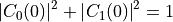
Schrodinger equation 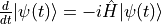
Matrix representation 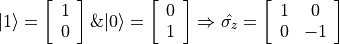
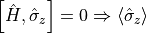 is a constant of
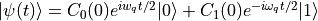
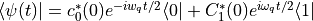
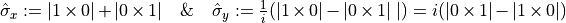
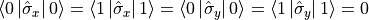
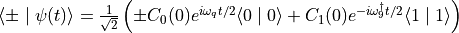
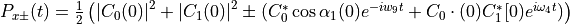
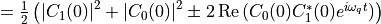
Unitary time evolution operator
[2]:
frequency = 1 initialC0real = 0.5 initialC0imag = 0.5 initialC1real = 0.5 initialC1imag = 0.5 initialC0 = (initialC0real + 1j*initialC0imag)/((initialC0real**2) + (initialC0imag**2)) initialC1 = (initialC1real + 1j*initialC1imag)/((initialC1real**2) + (initialC1imag**2)) sz = qt.sigmaz() sy = qt.sigmay() sx = qt.sigmax() ket1 = qt.basis(2, 0) ket0 = qt.basis(2, 1) qubitHamiltonian = 0.5*frequency*sz initialState = qt.superPos(2, {0: initialC1, 1: initialC0}, populations=False) initialC0 = initialState.A[1][0] initialC1 = initialState.A[0]
[3]:
analyticalC0 = lambda t : initialC0*(np.e**(0.5*2*np.pi*1j*frequency*t)) analyticalC1 = lambda t : initialC1*(np.e**(-0.5*2*np.pi*1j*frequency*t)) expectationsAnalytic = {'sz':[], 'sx':[], 'sy':[]} sxExpectation1 = lambda t: 2*(np.conj(initialC0)*initialC1*np.e**(-1j*2*np.pi*frequency*t)).real szExpectation2 = (abs(initialC1)**2) - (abs(initialC0)**2)
[4]:
stepSize = 0.01 finalTime = 2 + stepSize stepCount = int(finalTime / stepSize) unitaryEvolution = qt.Unitary(2*np.pi*qubitHamiltonian, stepSize) stepDiff = -1j*2*np.pi*qubitHamiltonian*stepSize
[5]:
numericalTimeC_0real = [] numericalTimeC_0imag = [] numericalTimeC_1real = [] numericalTimeC_1imag = [] szExpectation = [] sxExpectation = [] syExpectation = [] state = initialState for i in range(stepCount): ct1 = qt.innerProd(state, ket1) # <ket1|state> ordering is important ct0 = qt.innerProd(state, ket0) numericalTimeC_0real.append(ct0.real) numericalTimeC_0imag.append(ct0.imag) numericalTimeC_1real.append(ct1.real) numericalTimeC_1imag.append(ct1.imag) szExpectation.append(qt.expectation(sz, state)) syExpectation.append(qt.expectation(sy, state)) sxExpectation.append(qt.expectation(sx, state)) expectationsAnalytic['sx'].append(sxExpectation1(i*stepSize)) expectationsAnalytic['sz'].append(szExpectation2) state = unitaryEvolution @ state #state += stepDiff @ state
[6]:
timeList = [i*stepSize for i in range(stepCount)] C_0Analytical = [analyticalC0(i*stepSize) for i in range(stepCount)] C_0Analyticalr = [c.real for c in C_0Analytical] C_0Analyticali = [c.imag for c in C_0Analytical] C_1Analytical = [analyticalC1(i*stepSize) for i in range(stepCount)] C_1Analyticalr = [c.real for c in C_1Analytical] C_1Analyticali = [c.imag for c in C_1Analytical]
[7]:
fig, ax = plt.subplots(figsize=cm2inch(8, 6)) ax.plot(timeList, numericalTimeC_0real, linestyle='--') ax.plot(timeList, C_0Analyticalr, linestyle=':') ax.plot(timeList, numericalTimeC_0imag, linestyle='--') ax.plot(timeList, C_0Analyticali, linestyle=':') ax.set_xticks([0.0, 0.5, 1.0, 1.5, 2.0]) ax.set_yticks([-1.0, -0.5, 0, 0.5, 1]) ax.yaxis.set_minor_locator(tck.AutoMinorLocator()) ax.xaxis.set_minor_locator(tck.AutoMinorLocator()) ax.tick_params(direction='in', which='both') ax.tick_params(bottom=True, top=True, left=True, right=True, which='both') ax.tick_params(length=4, width=1.25) ax.tick_params(length=2, width=1.25, which='minor') for axis in ['top','bottom','left','right']: ax.spines[axis].set_linewidth(1.5) plt.show()
[8]:
fig, ax = plt.subplots(figsize=cm2inch(8, 6)) ax.plot(timeList, numericalTimeC_1real, linestyle='--') ax.plot(timeList, C_1Analyticalr, linestyle=':') ax.plot(timeList, numericalTimeC_1imag, linestyle='--') ax.plot(timeList, C_1Analyticali, linestyle=':') ax.set_xticks([0.0, 0.5, 1.0, 1.5, 2.0]) ax.set_yticks([-1.0, -0.5, 0, 0.5, 1]) ax.yaxis.set_minor_locator(tck.AutoMinorLocator()) ax.xaxis.set_minor_locator(tck.AutoMinorLocator()) ax.tick_params(direction='in', which='both') ax.tick_params(bottom=True, top=True, left=True, right=True, which='both') ax.tick_params(length=4, width=1.25) ax.tick_params(length=2, width=1.25, which='minor') for axis in ['top','bottom','left','right']: ax.spines[axis].set_linewidth(1.5) plt.show()
[9]:
fig, ax = plt.subplots(figsize=cm2inch(8, 6)) #fig, ax = plt.subplots(figsize=cm2inch(8, 6)) ax.plot(timeList, szExpectation) ax.plot(timeList, expectationsAnalytic['sz'], '-.') ax.plot(timeList, syExpectation) ax.plot(timeList, sxExpectation) ax.plot(timeList, expectationsAnalytic['sx'], '-.') ax.set_xticks([0.0, 0.5, 1.0, 1.5, 2.0]) ax.set_yticks([-1.0, -0.5, 0, 0.5, 1]) ax.yaxis.set_minor_locator(tck.AutoMinorLocator()) ax.xaxis.set_minor_locator(tck.AutoMinorLocator()) ax.tick_params(direction='in', which='both') ax.tick_params(bottom=True, top=True, left=True, right=True, which='both') ax.tick_params(length=4, width=1.25) ax.tick_params(length=2, width=1.25, which='minor') for axis in ['top','bottom','left','right']: ax.spines[axis].set_linewidth(1.5) plt.show()
[10]:
import qutip
[11]:
b = qutip.Bloch() b.add_points([sxExpectation, syExpectation, szExpectation]) b.show()
[ ]: